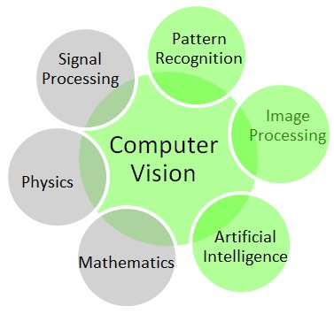

Qian Wang
I am a PostDoc Research Associate working with Prof. Toby P. Breckon at Department of Computer Science, Durham University, UK. My research focus on computer vision, zero-shot learning, human action recognition, X-ray CT image analysis for aviation scecurity. I got my PhD of Computer Science (2017) from The University of Manchester supervised by Dr. Ke Chen . Before coming to Manchester, I got my Master's degree in Biomedical Engineering (2013), and Bachelor's degree in Electronic Engineering (2010), both from University of Science and Technology of China.
publications
- Qian Wang, Khalid N. Ismail, Toby P. Breckon, An Approach for Adaptive Automatic Threat Recognition Within 3D Computed Tomography Images for Baggage Security Screening, submitted to Journal of X-ray Science and Technology. [arXiv]
- Qian Wang, Ning Jia, Toby P. Breckon, A Baseline for Multi-label Image Classification Using Ensemble Deep CNN , ICIP 2019. [Code]
- Qian Wang, Penghui Bu, Toby P. Breckon, Unifying Unsupervised Domain Adaptation and Zero-Shot Visual Recognition, IJCNN 2019. [Code]
- Qian Wang, Ke Chen, Multi-Label Zero-Shot Human Action Recognition via Joint Latent Embedding, submitted to Pattern Recognition. [project page]
- Qian Wang, Ke Chen, Alternative Semantic Representations for Zero-Shot Human Action Recognition, ECML-PKDD 2017. [ project page ]
- Qian Wang, Ke Chen, Zero-Shot Visual Recognition via Bidirectional Latent Embedding, International Journal of Computer Vision, 2017. [pdf][project page]
- Wang, Q., Chen, X., Chen, R., Chen, Y., & Zhang, X. (2013). Electromyography-Based Locomotion Pattern Recognition and Personal Positioning Toward Improved Context-Awareness Applications. IEEE Transactions on Systems, Man, and Cybernetics: Systems, 43(5), 1216-1227.
- Fei Li, Qian Wang, Shuai Cao, De Wu, Quan Wang, and Xiang Chen. Lower-limb muscle synergies in children with cerebral palsy. In Neural Engineering (NER), 2013 6th International IEEE/EMBS Conference on, pp. 1226-1229. IEEE, 2013.
- Qian Wang; Xiang Chen; De Wu; Lingling Qian; Xu Zhang, Acceleration and Electromyography (EMG) Patterns Analysis for Children with Cerebral Palsy, Proceeding of IEEE Healthcom 2012, Beijing, China, 10-13 Oct. 2012.
- Qian Wang; Yuwei Chen; Xiang Chen; Xu Zhang; Ruizhi Chen; Wei Chen, A Novel Pedestrian Dead Reckoning Solution Using Motion Recognition Algorithm with Wearable EMG Sensors, Journal of Global Positioning Systems(2011), Vol.10, No.1:39-49, DOI:10.5081/jgps.10.1.39
- Chen, Yuwei, Ruizhi Chen, Xiang Chen, Wei Chen, and Qian Wang. Wearable electromyography sensor based outdoor-indoor seamless pedestrian navigation using motion recognition method. In IPIN, pp. 1-9. 2011.
- Wang Q.; Zhang X.; Chen X.; Chen R.; Chen W.; Chen Y., A novel pedestrian dead reckoning algorithm using wearable EMG sensors to measure walking strides, Proceeding of Ubiquitous Positioning Indoor Navigation and Location Based Service (UPINLBS 2010), Kirkkonummi, Finland, 14-15 Oct. 2010, pp 1-8.
Contact
qian.wang173@hotmail.com